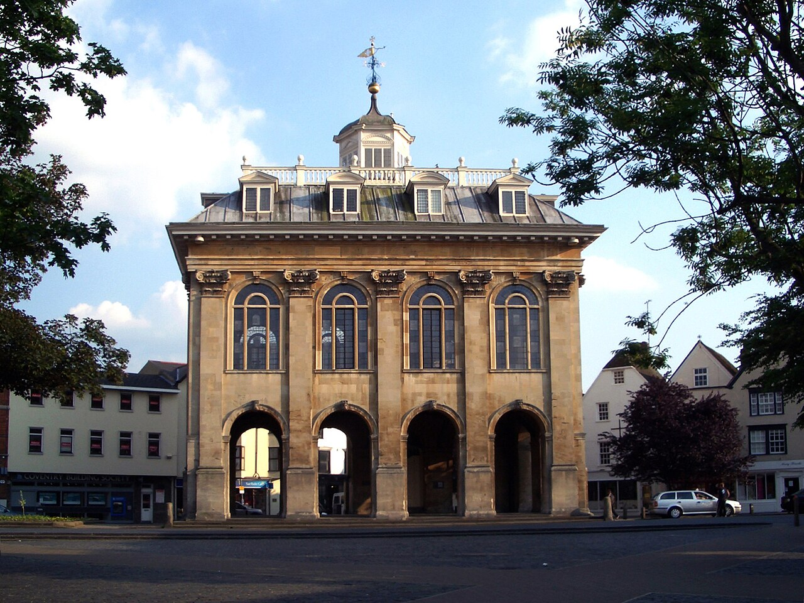

Абингдон — старинный город на юге Англии. Он стоит на реке Темзе.
Это один из самых старых городов Великобритании, ему больше тысячи лет.
Город находится в графстве Оксфордшир, недалеко от Оксфорда.
Абингдон известен своим старым аббатством, красивым мостом через Темзу и зданием County Hall. Раньше здесь выпускали знаменитые спортивные автомобили MG. Сегодня это тихий и уютный городок, куда приезжают туристы.
Копирайт: ©
Неразрывный пробел: Абингдон — город
Знак меньше: < и знак больше: >
Амперсанд: &
Кавычки: "Старый город"
Градус: летом здесь около 22°C
Фунт стерлингов: 100£
Статья об Абингдоне в Википедии (в новой вкладке)

Здание County Hall в Абингдоне (фото: Des Blenkinsopp, geograph.org.uk)
| Параметр | Значение |
|---|---|
| Страна | Великобритания |
| Регион | Юго-Восточная Англия |
| Графство | Оксфордшир |
| Река | Темза |
| Население | около 40 000 человек |
© 2026 Сайт о городе Абингдон. Сделано на уроке информатики.